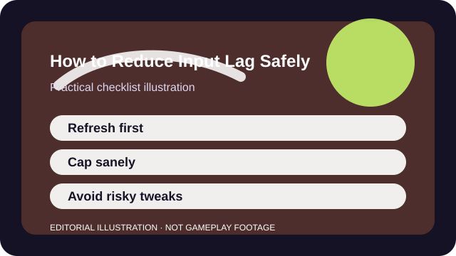

QUICK ANSWER
The short version
Check the display chain, frame cap, controller path, and background load first. Only then decide whether the delay is local, network-based, or simply low frame rate masquerading as lag.
Input lag is a chain, not one setting. Display mode, refresh rate, frame pacing, controller polling, USB behavior, wireless conditions, and network stability can all contribute a piece of the delay you feel.
That is why "one weird trick" advice ages badly. The safe path is to locate the slow part of the chain and fix it directly instead of piling on unsupported registry edits or risky software claims.

CHECKLIST
What to confirm before you change anything
- Write down the symptom: delayed camera, late shots, muddy menu response, or online desync.
- Confirm your display is running at the refresh rate you think it is using.
- Note whether the problem appears with both controller and mouse or only one input path.
- Pause large downloads, overlays, or capture tools before you test.
- Set aside one repeatable action such as a flick, jump, or menu timing check for comparison.
This step turns a feeling into a chain of suspects. Without that, every tweak competes to explain the same vague frustration.
SCENARIO
When the game feels late even though the FPS counter looks fine
High average FPS can still feel sluggish if frame time is uneven, the display is running in the wrong mode, or the network is the real bottleneck. Players often keep lowering graphics because that is the most visible control they have, even when it is not the layer causing the delay.
A better test is to separate local responsiveness from server response. Menu navigation, camera turns, and private training modes reveal local issues. Late hit registration or rubber-banding point toward network conditions instead.
PROCESS
A repeatable way to work through it
Fix the display path first
Use the intended refresh rate, correct fullscreen mode for the game, and supported sync options before touching fringe tweaks.
Align frame pacing with the display
A sane frame cap or performance preset can feel better than unstable peaks that constantly collide with the refresh ceiling.
Reduce input-path noise
Test a direct-wired controller or stable mouse connection so wireless quirks or hubs are not hiding in the chain.
Separate local delay from online delay
If menus feel crisp but fights do not, the next investigation belongs to your network, region, or server conditions rather than your render path.
Keep the smallest set of changes that made the input feel cleaner and reverse the rest. A shorter settings trail is easier to maintain and much easier to explain if support becomes necessary.
COMMON MISTAKES
What usually makes the problem worse
Confusing low FPS with pure input lag
A game can feel delayed because frames arrive unevenly, not because a secret latency toggle is wrong.
Turning off security or applying unsupported system hacks
Unsafe advice can create bigger problems than the latency you were trying to solve.
Testing only online matches
You need at least one local-feeling reference point to know whether the problem belongs to the game client or the network.
SUCCESS CRITERIA
How to know the change actually worked
- Menu and camera response feel more immediate in a repeatable comparison task.
- The fix is stable under normal play, not only in a sterile test range.
- You understand whether the remaining issue is local, network, or both.
- The final setup uses supported settings you can recreate later.
The best result is clarity as much as speed. Even if you do not eliminate every millisecond, you should know which layer is still limiting the experience and avoid magical thinking about the rest.
SOURCES AND LIMITS
Where to verify live details
- Cloud gaming and long-distance server routing set a hard floor that local tweaks cannot erase.
- Console menu names and performance options differ from PC even when the principles are similar.
- Persistent crashes, overheating, or electrical issues are support problems, not latency-tuning puzzles.
Menu names, defaults, and device behavior can change after updates. Use the linked official support surfaces for the current live details and keep this guide for the process around them.